- L’éternelle moisson (Début)
Guide d’optimisation de l’ordre des quêtes
Ce guide a été conçu dans l'optique de réaliser l'intégralité des quêtes du jeu en ne faisant qu'une fois (quand c'est possible) chaque donjon.
Code couleur :
Ici se trouve une version "light" de ce guide, avec seulement les quêtes pour les Dofus et Tours du monde.
Niveau 70
Landes de Sidimotes : Cimetière des Torturés et Désolation de Sidimotes
Niveau 130
Niveau 160
Plaines de Cania : Dents de Pierre (Krosmoglob)
Niveau 170
Ile de Grobe : Mont des Tombeaux (Dorigami)
Osavora : Tourbz Boorzzbz (Dofoozbz)
Bonta / Brâkmar : Alignement 71-80
Saharach : Gorge des Vents Hurlants
Niveau 180
Landes de Sidimotes : Gisgoul, Domaine et Caverne des Fungus
Ile de Frigost : Village Enseveli et Forêt Pétrifiée (DDG)
Srambad : Catacombes (Dofus Nébuleux)
Niveau 190
Ile de Frigost : Crocs de verre (DDG)
Bonta / Brâkmar : Alignement 86-89
Ile de Frigost : Mont Torrideau et Ruche des Gloursons (DDG)
Niveau 200
Rêves de dragons 1 (Dofus Vulbis)
Ile de Frigost : Château de Harebourg 1 (DDG)
Bonta / Brâkmar : Alignement 90-100
Ile de Frigost : Château de Harebourg 2 (DDG)
Profondeurs de Sufokia : Trithon (Dofus Abyssal)
Ile d’Otomaï : La fin de l’éternité
Ivoire
Ile de Frigost : Roc des Salbatroces
Enutrosor : Retraite des Éternels (Dofus Nébuleux)
Saharach : Citée Oubliée et Pyramide Maudite
Profondeurs de Sufokia : Ruines sous-marines (Dofus Abyssal)
Landes de Sidimotes : Terres Désacrées
Ebène
La fratrie des oubliés (Dofus Forgelave)
Tours de la fratrie : Épaves Silencieuses (Dofus Forgelave)
Profondeurs de Sufokia : R’lyugluglu (Dofus Abyssal)
Ile de Frigost : Royaume de Martegel
Srambad : Hauts Ténébreux (Dofus Nébuleux)
Tours de la fratrie : Marches Magmatiques (Dofus Forgelave)
Six sur Six
Xélorium : Lendemains incertains (Dofus Nébuleux)
Je rêvais d’un autre monde (Dofus Nébuleux)
Eliocalypse
Rêves de dragons 2 (Dofus Vulbis)
Eliocalypse (Dofus du Cauchemar)
Wukin et Wukang (Dofus Tacheté)
Atoll des Possédés et Cauchemar des Ravageurs (Dofus du Cauchemar)
Archipel de Valonia : Ereboria et Ephedrya (Dofus Sylvestre)
Osavora : Réserve Touffue et Village Rhoarim (Dofoozbz)
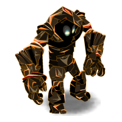
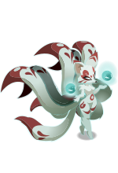
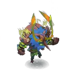
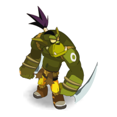
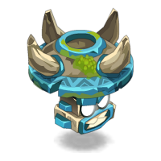
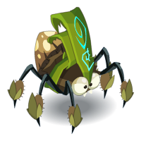
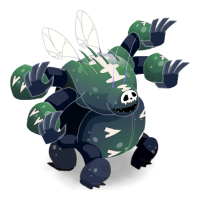
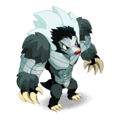
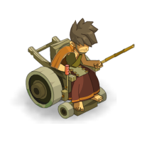
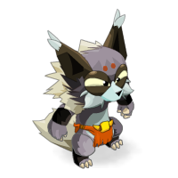
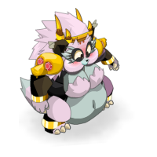
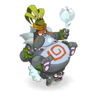
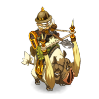
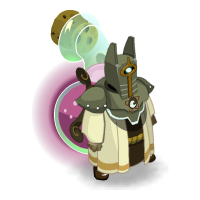
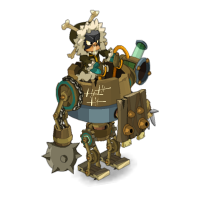
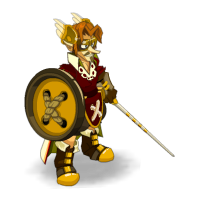
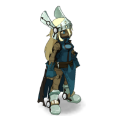
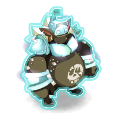
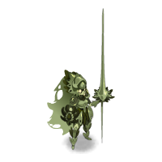
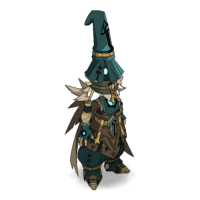
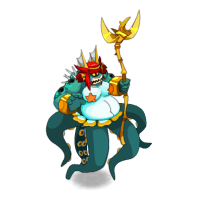
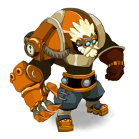
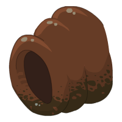
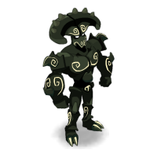
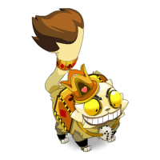
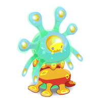
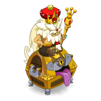
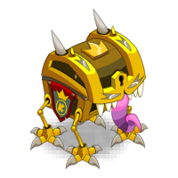
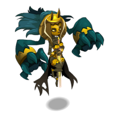
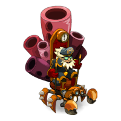
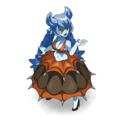
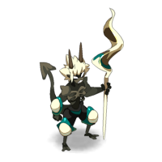
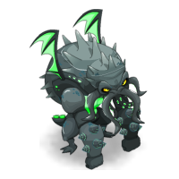
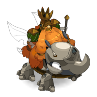
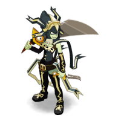
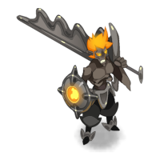
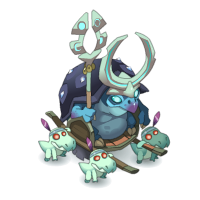
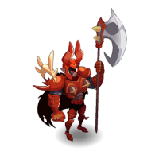